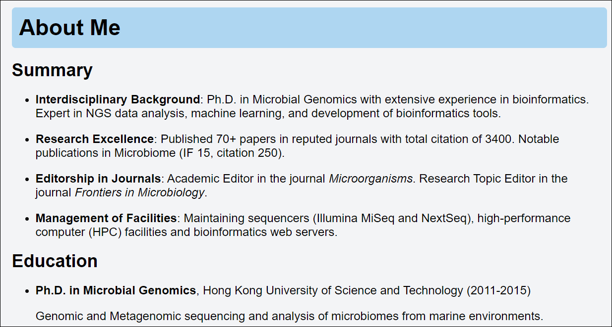
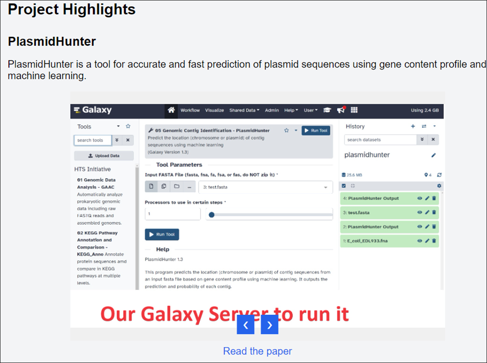
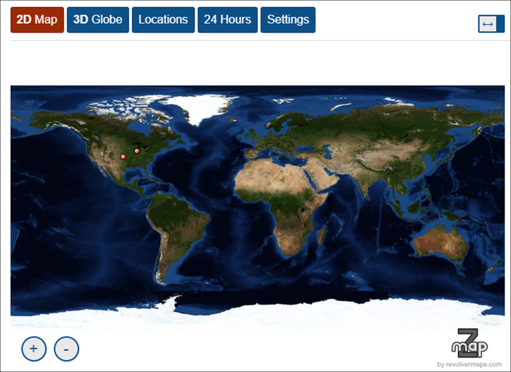

Why is a personal website important?
In today's digital age, having an eye-catching personal website has become an essential tool for self-presentation and establishing a professional image. Whether you're job hunting or an experienced professional, a well-designed personal website can bring significant advantages to your career development. Imagine an HR representative accidentally clicking on your personal website link in your resume and being immediately attracted by the beautiful webpage and your accomplishments, helping you stand out among 100 candidates. For example:
In the industry, a personal website plays multiple roles:
- Core of personal brand building
- Comprehensive showcase of skills, experience, and achievements
- Increases chances of career opportunities
- Helps stand out in competitive promotions
- Makes a deep impression on recruiters and potential clients
- Excellent platform for networking
- Ideal place for creative professionals to showcase portfolios
In academia, a personal website is equally important:
- Window to showcase research results
- Platform to share research projects, published papers, and academic achievements
- Facilitates understanding of your work by other researchers
- Promotes academic exchange
- Increases opportunities for potential collaborations
- Enhances visibility in the academic world
- Increases chances of citations and invitations to academic activities
- For educators, it's a platform to share course materials and teaching philosophies
Why do I recommend GitHub.io for personal websites?
Among the many platforms for establishing personal websites, GitHub Pages (also known as GitHub.io) is often the most used. Here's why it's my top choice:
- Completely free, no hosting fees
- No need for domain registration or annual maintenance fees
- Free HTTPS and global CDN included
- Excellent SEO performance
- Clean structure and fast loading speed
- Stable with strong infrastructure support
- Global CDN ensures low webpage latency
- Increases professionalism and credibility in the tech community
An example: My personal website
I recently finished my website, which serves as a perfect real-life example:
I do research in machine learning and microbial genomics. You can visit to learn about my work directions and results. If you're interested, feel free to connect on LinkedIn for communication, collaboration, or resource sharing.
Header Section
The header section includes my photo, name, title, institution, and contact information. It's simple and clear, with a LinkedIn link for easy network expansion.
Research Interests
I used JavaScript to generate a word cloud, clearly showing my main and additional fields.
About Me
The "About Me" section introduces my background, education, and work experience.
Current Company
This section introduce your current organization and your team, including team members, projects.
Achievements Showcase
I added multiple slideshow components that automatically plays every 5 seconds, allowing visitors to intuitively understand my work results.
Visitor Statistics
At the bottom of the webpage, there's a rotating globe icon. Clicking it shows recent page visits and visitor locations through RevolverMaps.
How to create a GitHub.io personal website?
- Register a GitHub account, preferably using your name as the username.
- Create a new repository named
username.github.io. Replace username with your name. - After creating the repository, you'll be prompted to create or upload files.
- Create a file called
index.htmllocally, save your HTML-formatted webpage content in it, then upload it and click "Commit changes". - After a few minutes, you'll be able to visit
yourname.github.ioto see your website.
How to edit your index.html webpage file?
You can use my index.html as a template:
- Download the file from this link.
- Install Notepad++ and use it to edit the file.
- Replace all content (text, image names) with your own.
- Keep image files in the same folder as
index.html. - Upload
index.htmlalong with your image files to your GitHub repository.
Note: The RevolverMap code in index.html is person-specific. Generate your own code at RevolverMaps and replace the corresponding part in index.html (around line 305).
These are the processes of creating your own personalized GitHub.io website. It's actually very simple. If you have any questions or want me to customize a webpage for you (for $49, using the template), you can contact me via the email on my website.